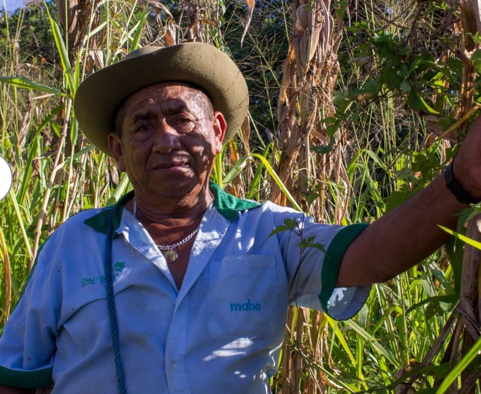

Gutberto Mena y Tuz
Líder fundador
Uno de los principales impulsores del asentamiento de la comunidad en su ubicación actual, trabajó incansablemente por el bienestar colectivo.
Fundación
Organización comunitaria